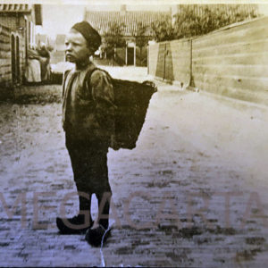

01 / De draagmand
Over krielen, visbennen of dréégmangde…
Ome Engel sjouwde de strandspullen van mijn moeder en haar vriendin Kniertje van der Zel naar het strand in zijn “juttersmand”, zoals mijn moeder het in het bijschrift van haar fotoboek noemde.
Typisch Derrepers (Egmond aan Zee) zo’n mand. Als je indertijd als Derper geboren werd, stond zo ongeveer je “mankie” al naast de wieg klaar, want er waren zelfs kleine draagmandjes voor kinderen.